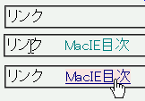

絶対配置された要素内で、擬似クラスに指定されたスタイルの一部が反映されないことがある。
<script type="text/javascript">
function vis(id) {
document.getElementById(id).style.visibility = 'visible';
}
function hid(id) {
document.getElementById(id).style.visibility = 'hidden';
}
</script>
<style type="text/css">
a#a1:link, a#a1:visited {
color: teal;
text-decoration: none;
}
a#a1:hover {
color: navy;
text-decoration: underline;
}
</style>
<div style="position:relative;">
<span onmouseover="vis('l1')">リンク</span>
<div id="l1" onmouseout="hid('l1')"
style="position:absolute; left:4em; top:0; visibility:hidden;">
<a href="../macie.html" id="a1">MacIE目次</a>
</div>
</div>
「リンク」の文字にマウスポインタを乗せると、文字列の右側に、前景が青緑色で下線装飾なしのリンクが表示されます。そのリンクにマウスポインタを乗せると、前景が紺色に変更され下線装飾が付加されます。リンクからマウスポインタを離すと、リンク文字列が消えます。style要素での指定どおりに表示されることを確認してください。
※Win上のIE6.0、Moz1.0.1、Opera6.05で動作を確認しました。
上から、マウスポインタを乗せていないとき、「リンク」にマウスポインタを乗せたとき、アンカーにマウスポインタを乗せたときの状態です。
WinIE6.0での表示（標準モード）
（position:absolute; を設定した）div要素を外すと正常に動作することから、親要素が絶対配置されていることがバグの原因のようです。
MacIE4.5で不具合が発生する模様。
Mac IE4.5で
<div id="test" style="position:absolute; visibility:hidden; left:213px; top:281px; z-index:1">
<table width="200" border="0" cellspacing="0" cellpadding="0" bgcolor="#6699CC">
<tr>
<td>
<a href="#" onMouseOver="Swap('1','hoge');showLAYER('test')" onMouseOut="Swap('0','hoge');hydeLAYER('test')">リンク</a>
</td>
</tr>
</table>
</div>
としたところ、
外部ファイルで指定している
A:link{font-size:10px;color:#FFFFFF}
A:visited{font-size:10px;color:#CC0000}
A:hover{font-size:10px;color:#FF3300;text-decoration:underline}
が効きません。
どう効かないかというと、マウスを当てた時の色が変わりません。アンダーラインは効きますが、
マウスを離しても下線が消えない、というもの。
tableごとdivから外したら正常に動作しましたが、外さずに動作する方法はないものでしょうか、、。